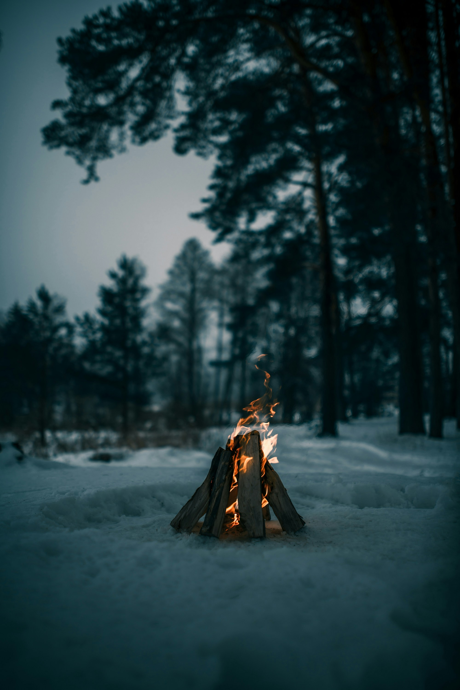

Escaping
 Photo by Vadim Sadovski on UnsplashThe spark I lit set our world on fire Now my heart rests beneath the pyre Your face glows in the fire's soft light Your smile of love is breaking my heart tonight.
My cold feet shiver in this frosty land, Wondering to tread this strange path. The wind blows embers to pierce my skin, But burns the soul deeper within.
The feet, they want to flee Seeking escape from the flames. Oh lord, tell me a way. A way to dance with the fire without melting away.
My heart's a fragile glass on breakage's brink, Your gentlest touch could cause it to sink. If I leave to piece its shards alone Will you also need to leave to mend your own?
So, While we have time, let's flee in separate ways, The fire will burn down on its own someday. We'll return to gather the ashes left behind, Even being apart, we will rise like a phoenix after some time.